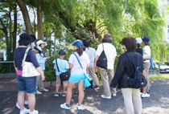
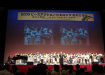
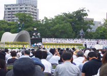
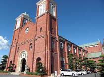
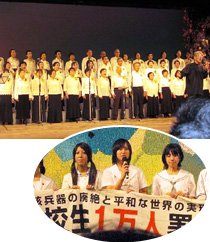

｢2009ヒロシマ・ナガサキ行動｣報告
｢核兵器の廃絶と戦争のない平和な世界｣を願って、８月４日から９日まで日本生協連の｢ピースアクションinヒロシマ・ナガサキ｣が行われました。ヒロシマ行動に埼玉県生協連１人、ナガサキ行動にさいたまコープ12人と医療生協さいたま51人、埼玉県生協連１人が参加しました。
■ヒロシマ行動 ８月４日～６日

|
フィールドワーク ｢～考えてみよう！あの日あの時の出来事を～｣被爆柳・本川小学校コース |
｢原爆の子の像｣に捧げられる折り鶴が大切に保管・展示されている旧広島市民球場から護国神社鳥居脚部、被爆柳、清住寺の石段や灯篭、本川小学校平和資料館など市内中心部の遺構・慰霊碑など64年前の出来事を想像しながら見学しました。
｢ヒロシマ虹のひろば｣広島県立総合体育館（52生協・約1,300人）

日本生協連の山下会長は｢今回のピースアクションはＮＰＴ再検討会議を控え重要な意味があります。21世紀の最大の危機は核兵器の存在と拡散、使用への脅威です。秋葉市長のオバマジョリティーを支持し、11月のＩＣＡ総会では核兵器廃絶を訴えたい｣とあいさつされました。黙祷後、漫画家の中沢啓治氏が自身の被爆体験をもとにした｢はだしのゲンと私｣をテーマに被爆の証言をされました。
次に、｢みんなのひろば｣で各生協の平和活動の交流をしました。続いて、秋葉忠利広島市長が｢世界は核兵器廃絶に向けて今まさに歴史的な転換点に差し掛かっています。21世紀は、市民の力で問題を解決できる時代です。今後とも私たちと一緒に行動していただくことを期待しています｣とあいさつされました。次に、ヒロシマ虹のひろば合唱団による大合唱が行われました。
|
｢広島市原爆死没者慰霊式並びに平和祈念式典｣ |

秋葉市長は｢私たちは、核兵器のない世界をめざすオバマ大統領を支持し、核兵器廃絶のために活動する責任があります。廃絶を願う多数派である私たち自身を『オバマジョリティー』と呼び、力を合わせて2020年までに核兵器の廃絶を実現しようと世界に呼びかけます。Yes, we can｣と平和宣言されました。
学習会「核兵器廃絶に向けて私たちにできること～ＮＰＴ再検討会議に向けて～」（森瀧春子さん）
｢被爆者や市民運動等があり第３の核戦争を阻止できています。1人でも多くの被爆者と核廃絶をしたい。原爆と同時に研究されてきたのが劣化ウランですが、今では約20カ国に拡散しています。核兵器と劣化ウランは切り離せない問題。今後は、国連でのヒロシマ・ナガサキ議定書の提案や包括的禁止条約の法制化が必要。対人地雷やクラスター爆弾の禁止条約のように、みんなが力を合わせ活動していくことが大切です｣と話されました。
■ナガサキ行動 ８月７日～９日
|
生協平和のまち歩き｢原爆落下中心地から浦上天主堂まで｣ ～アンジェラスの鐘を訪ねるコース～ |

爆心地である平和・松山公園の近くにある主要な原爆の遺跡を見学しました。原爆投下中心碑から如己堂、永井隆記念館、浦上天主堂などで64年前の惨状を想像しながら、キリスト教徒の歴史と過酷な運命にも想いをはせ見学しました。
ピースガイドの多良さんは、小学４年生の時に空襲警報が解除になり、外に出たところで被爆。｢64年前にあった惨劇をだれかが伝えなければ｣と思い、黄色のポロシャツ(ピースガイドの制服)を着ているとのこと。こうした取り組みを通じ、後世へと伝える活動の大切さを痛感しました。
|
｢じっくり聞く被爆の証言｣ 証言者：尾畑正勝さん(長崎原爆被災者協議会) |
｢私は、27歳の時に爆心地から3.5km離れたところで被爆。三菱の長崎造船所の工場で仕事に従事中でした。防空壕に入っていた人達も、夏で暑くて外に出てきて被爆した人も多い。死亡者の正確な数値はわからず、74,000人位であろうとなっている。遺体でも遺骨でも判明できない死亡者がかなりいるということです｣｢被爆者の治療方法もわからず、永井博士をはじめ多くの医師の奮闘もあった｣｢戦争の怖さ、悲惨さを伝えることが大事と思っている。また、核兵器は無くすんだ、廃絶するんだとの思いがある｣と話されました。
「ナガサキ虹のひろば」長崎市民会館文化ホール(38生協600人)

被爆者歌う会｢ひまわり｣による合唱のオープニングから始まり、黙祷の後、主催者として日本生協連の芳賀専務理事が｢核のない社会に向けて好機が訪れている。オバマ米大統領の登場、４月６日のプラハでの『核のない世界』を目指す発言。また、核から決別する世界のウネリもある。しかし日本政府のリーダーシップは乏しい。普段のくらしから平和を考え、命を育む母親が中心の生協の役割は大きい｣とあいさつされました。次に、同時刻｢平和市長会議の総会｣が行われているため田上長崎市長の参加が叶わなかった事が紹介されると、会場から平和市長会議成功へ向けた連帯の拍手が湧き起こりました。
|
｢長崎原爆犠牲者慰霊平和祈念式典｣ |
田上市長は、今年４月、チェコのプラハでアメリカのバラク・オバマ大統領が『核のない社会』を目指すと明言し、その後の行動から具体的な道筋を示した。強い決意に爆心地での感動があった事を報告。日本政府には、憲法の不戦と平和の理念を広げ、非核三原則の法制化と北東アジア非核兵器地帯の実現に着手すべきであると指摘。オバマ大統領を含めた世界の指導者に、｢爆心地・長崎｣に来るよう呼びかけました。また、長崎で行っている平和市長会議にふれ、来年２月のＮＧＯによる｢地球市民集会ナガサキ｣の開催と、来年のＮＰＴ(核不拡散条約)再検討会議に向けて、市民・ＮＧＯ・都市の結束を強めること等、これからの決意を表明しました。